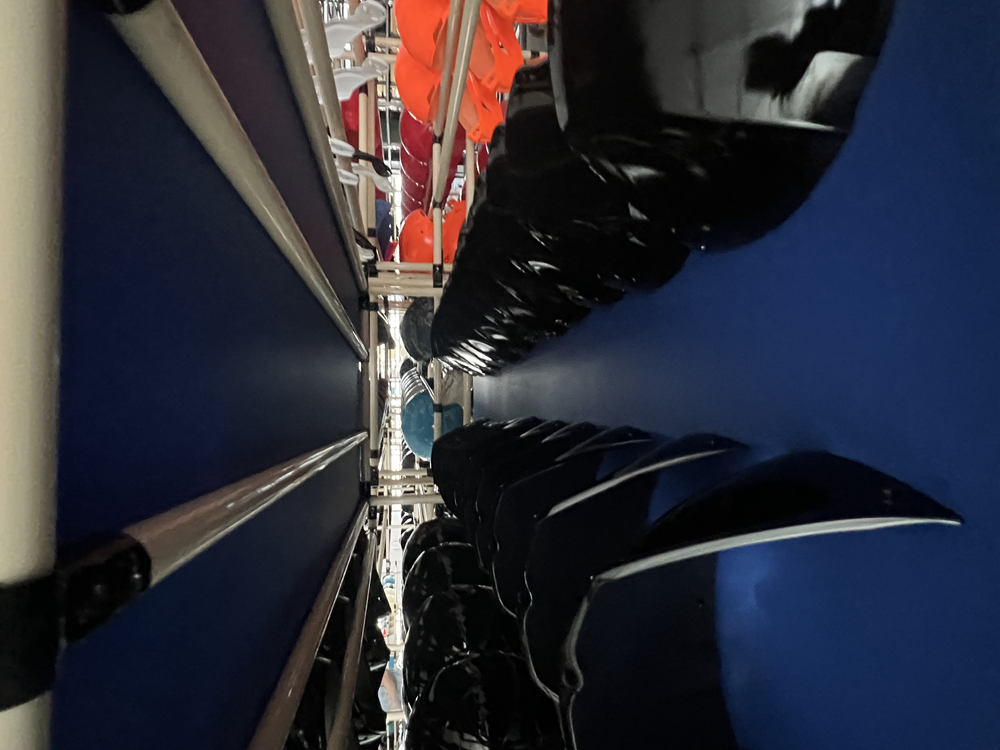

Taotao-owned factory-visit photo for context only. It does not identify a certified supplier or prove product compliance.
A China supplier sends you an ISO 9001 certificate with its quotation. Is that enough to approve a sample, place a deposit or list the product in your market? No single quality-system certificate answers all three questions. Give the certificate its proper role, then open a separate product-evidence track.
ISO describes ISO 9001 as a standard for an organization's quality management system. ISO also explains that it does not issue certificates itself; independent certification bodies do. A supplier's certificate may be relevant to its processes, but it is not approval of the specific helmet, door closer or other product in your order.
Two tracks, two decisions
| Track | Ask for | What you can decide |
|---|---|---|
| Supplier system | Certificate number, legal entity, site address, covered activities, standard edition, dates and issuing body. | Whether the claim matches the company and production activity you are evaluating; not whether your product is market-compliant. |
| Exact product | Model/configuration identifier, applicable destination-market requirement, test or approval basis where relevant, labels and change history. | Whether the evidence actually addresses the item and version you intend to buy; unresolved gaps still need review. |
First compare the certificate's legal name and address with the quotation and the site that will handle production. Ask the named certification body to confirm the certificate's status and scope through its official channel. A logo or PDF alone is not independent verification. Then map each regulatory or buyer requirement to the exact model, materials, accessories and intended market.
For a U.S.-bound motorcycle helmet, the distinction is particularly important. The U.S. National Highway Traffic Safety Administration says helmets under FMVSS No. 218 use manufacturer self-certification; NHTSA does not pre-approve helmets. Its consumer guidance specifies information on the rear label. An ISO 9001 certificate cannot substitute for a manufacturer-supported compliance basis and correct labeling for the exact helmet model.
Red flags and limits
- The certificate names a trading company or a different site, while the supplier implies it covers an unnamed factory.
- The scope covers an unrelated activity, or the issuing body cannot confirm the record.
- A product claim is supported only by a generic certificate, a photo of a different model or a label mock-up.
- The supplier changes shell, visor, liner, size range or production site without explaining whether the product evidence still applies.
These are questions to investigate, not automatic proof of fraud. Certification status can change, and a supplier may legitimately use several entities or sites. Obtain the current records and make the relationships explicit. A photo of a production rack is useful context, not verification of a certificate or a shipment.
Continue, pause or escalate
- Continue: the certificate claim is independently checkable, its entity and scope match the relevant operation, and separate evidence maps to the exact product and market.
- Pause: the certificate or model-to-evidence mapping is incomplete. Request the missing document before approving the sample or deposit.
- Escalate: identity, scope or product evidence materially conflicts with the order. Consider independent technical or compliance review before commercial commitment.
My prior corporate-banking experience informs this habit of matching authorized documents to observable operations. It does not give Taotao access to private bank data or turn a procurement check into a financial opinion. For product context, see our helmet and visor category and other sourcing categories.
Primary sources: ISO 9001 overview; ISO on certification bodies; NHTSA motorcycle-helmet guidance.